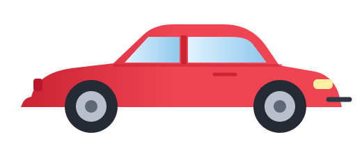

MRU y MRUA
Compara un movimiento con velocidad constante y otro con aceleración constante.
Auto que aceleraDos modelos sobre el mismo eje +x
t = 0,00 s


MRU
MRUA
050100150200250300350400
Auto MRUvelocidad constante
Auto MRUAaceleración constante
Velocidad vs. tiempo
Aceleración vs. tiempo
Valores actuales
🚙 MRUx = 0,0 mv = 20,0 m/sa = 0 m/s²
🚗 MRUAx = 0,0 mv = 0,0 m/sa = 2,0 m/s²
Δx MRUA: |v|: Distancia:
¿Qué estás observando?
El MRU mantiene su velocidad; el MRUA cambia su velocidad linealmente.
Movimiento por tramos
Construye un recorrido continuo combinando MRU y MRUA.
Tramo 01
t 0,00 sx 0,0 mv 5,0 m/s
x(t)
v(t)
a(t)
| Tramo | Tipo | t inicial | t final | x inicial | x final | v inicial | v final | a |
|---|
Lanzamiento parabólico
Descompone el movimiento en componentes horizontal y vertical.
t = 0,00 s
x y vₓ vᵧ T vuelo h máx alcance
x(t)
y(t)
vₓ(t)
vᵧ(t)
Ejercicios
Calcula, comprueba y aprende con retroalimentación inmediata.
0% completado
Teoría y fórmulas
Las ideas esenciales detrás de cada movimiento.
Velocidad constante
La aceleración es cero.
x = x₀ + vtAceleración constante
La velocidad cambia linealmente.
x = x₀ + v₀t + ½at²v = v₀ + at
Dos movimientos independientes
MRU horizontal y MRUA vertical.
v₀ₓ = v₀ cosθv₀ᵧ = v₀ senθ
¿Frenar o acelerar?
Depende del producto v·a.
v·a < 0 → disminuye rapidezv·a > 0 → aumenta rapidez